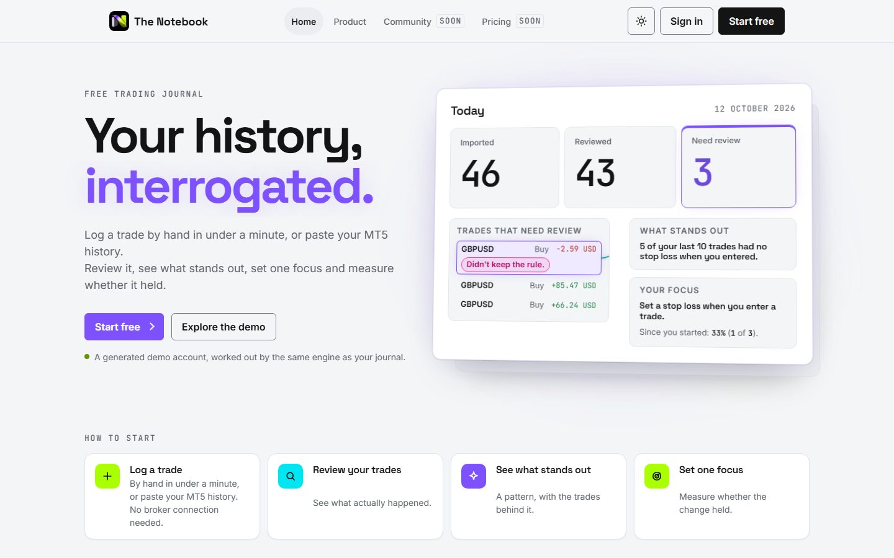

The Notebook
A trading journal for MT5 traders: review fast, change one thing, see if it held. Every number on screen can be traced back to a broker record.
The problem
Most trading journals run on hand-typed numbers and screenshots, so their statistics can't be checked. A trader asking "did my change work?" gets an answer nobody can defend.
What I built
One language, one repository, two processes. A Next.js web app and a Node worker share 18 packages and meet only in PostgreSQL, which also holds the job queue. Connected accounts are rebuilt from the broker's own deal records and reconciled against the balance. Patterns come from fixed rules, not a model.
A 15-chapter specification is the source of truth. Database migrations are generated from its SQL, and 31 architecture decision records explain every trade-off, including the features I said no to.

Decisions
- Modular monolith, two processes. No microservices, no Redis, no Kubernetes. One engineer has to be able to own all of it. ADR-002
- PostgreSQL is the job queue. A job commits in the same transaction as the data it's about, so there's no second system to fall out of sync. ADR-005 · 011
- Full rebuild on every sync, diff writes. Boring and idempotent. Incremental patching waits for a measured trigger: 50M rows or rebuilds over 60 s at p95. ADR-016
- Rejected: trades read from screenshots. Numbers we can't reconcile become statistics we can't defend. ADR-025
Never
- The browser never touches the database or the broker connection.
- A broker password is never kept beyond its single use.
- Money, prices and R are decimals, never floats. Business logic never reads the clock directly.
- Tenant isolation is never left to one layer: app checks and Postgres row-level security both apply.
Measured
- 41.6 sto rebuild 100,000 trades from scratch; 14.4 s when nothing changedspec §14.2 · measured 7 Oct 2026
- 31 ADRs · 91 test filesacross 18 packages, a 15-chapter spec and a Truth Set of expected results
- One gate for everyoneevery pull request, mine or an agent's, passes the same CI checks before it merges